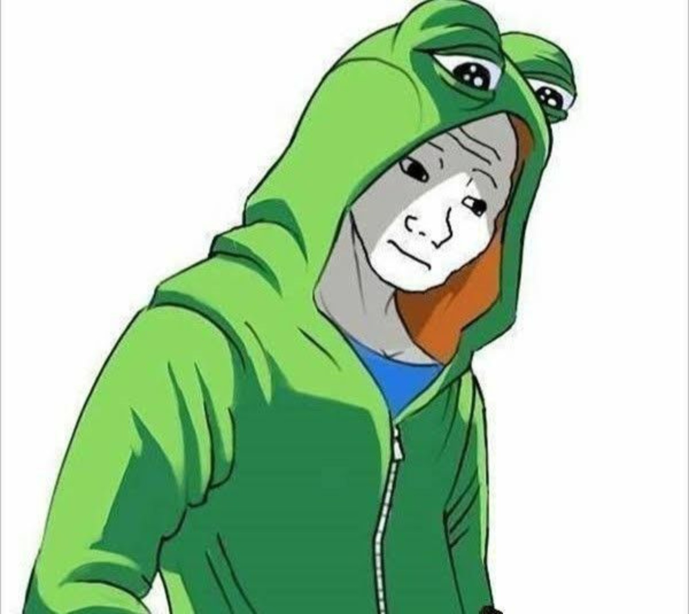
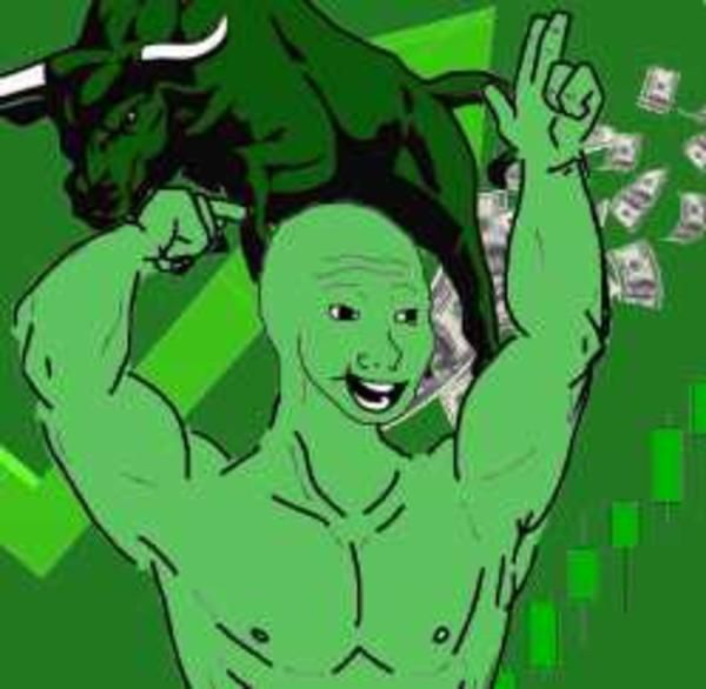
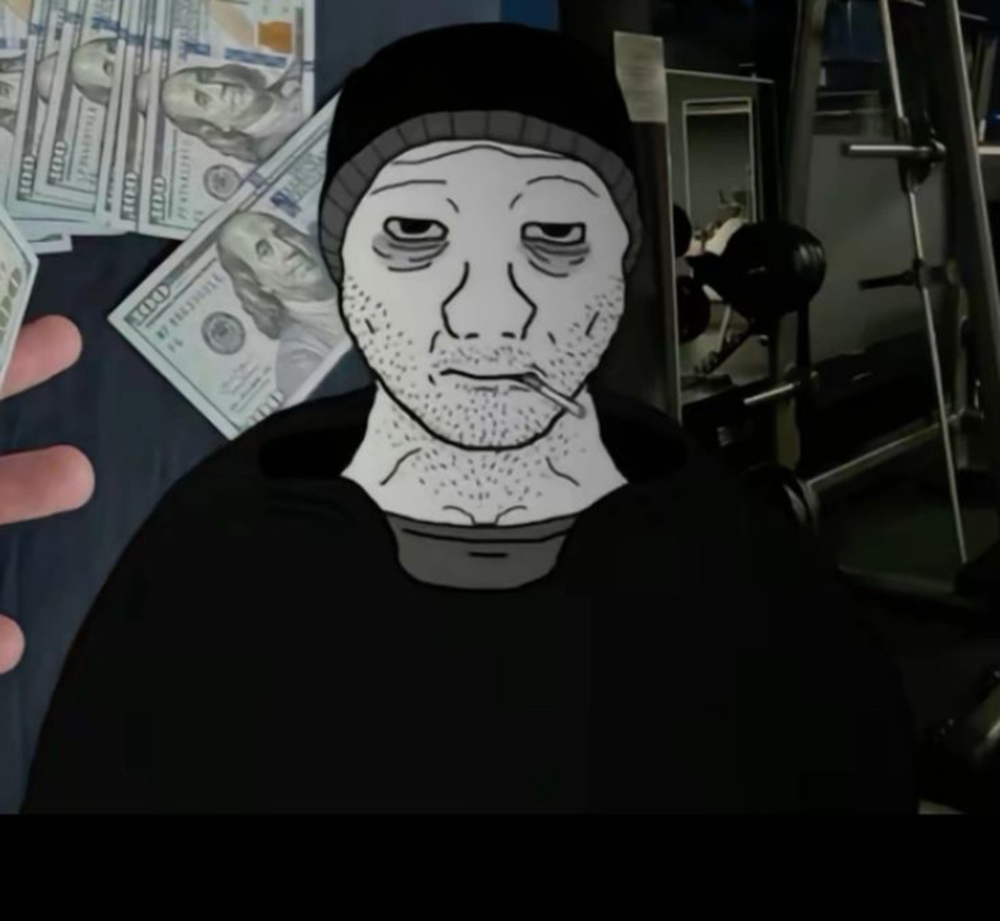
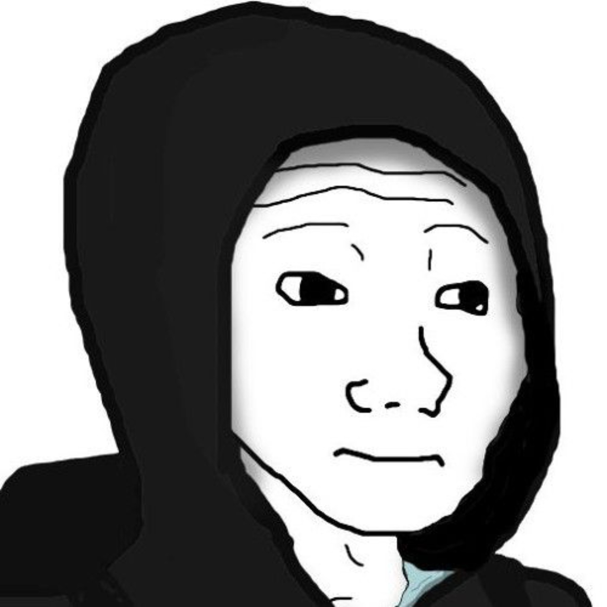

THE FACE THEY NEEDED
At first, Wojak was only a face. A tired shape the internet used when words were not enough. He became every loss, every late night, every silent laugh, every failure people were too embarrassed to explain.
At first, Wojak was only a face. A tired shape the internet used when words were not enough. He became every loss, every late night, every silent laugh, every failure people were too embarrassed to explain.

Then came the charts, the pumps, the rugs, and the candles that broke warriors. Every red candle left a mark. Every green candle brought hope. The arena remembered all of it.

JAKWO became the wall where memes, brands, coins, creators, and trolls fight for visibility. You can be seen. You can be buried. But if you enter, you become part of internet history.

The first warriors did not come for comfort. They came to leave a mark. Some entered with coins, some with memes, some with projects nobody believed in yet. The wall did not judge them. It only remembered.

Every arena has betrayal. Every pump has hunters. Every degen has one story about the trade that almost changed everything. JAKWO turned those scars into posters on the battlefield.

The loudest warriors wanted the center. The quiet ones waited in the corners. Ads were buried, names were covered, and new challengers kept arriving. Visibility became the prize.

Some entered to be funny. Some entered to promote. Some entered only to block someone else. But once they touched the wall, they became part of the same permanent chaos.

When a new war lands, the arena shakes. Posters fall. The wall flashes red. Everyone knows another warrior has entered. JAKWO is not a silent ad board — it is a living battlefield.